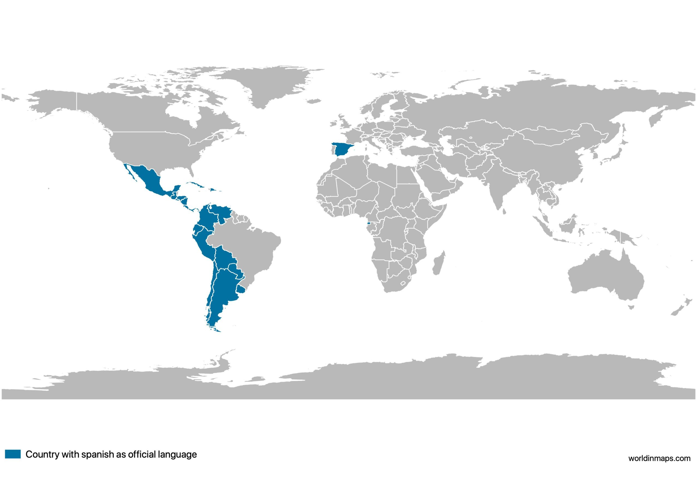

|
DIFFERNT SPANISH SPEKAING COUNTIES AND THE DIALECTS OF VENEZUELA |
| Venezuela effectively achieved its independence from Spain by 1819 as part of the Republic of Colombia, and the United States recognized the Colombian federation in 1822. After Venezuela separated from Colombia in 1830, the United States recognized and established diplomatic relations with Venezuela in 1835. |
|
About 40 languages are spoken in Venezuela. However, Spanish, the country's official language, is the most common. The most widely spoken indigenous languages are Wayuu, Warao, Piaroa, Yanomami, Kahlihna, Manduhuaca, Panaré, Pemón, Guahibo and Nhengtu. Most of these languages originated in the languages of the Caribs, the Arawaks and the Chibcha. As more indigenous people move to the cities, many of their languages are becoming extinct. Languages such as Sapé and Mapoyo have five or fewer speakers. Anthropologists are trying to learn these languages and the stories of these peoples before the last people who speak these languages die. Italian, Portuguese, Chinese, Arabic and English are the most common foreign languages spoken in Venezuela. Some English words, such as "parking," have found their way into Venezuelan Spanish. Venezuelans often speak less formally than people in most other Spanish-speaking countries. There are 21 countries that call Spanish their official language. They are most often located in large patches that were once inhabited or settled by the Spanish empire, but some settlements, such as Equatorial Guinea, are the sole speakers of Spanish as an official language on a continent. Central and South America, both of which are a part of Latin America, in addition to the Caribbean, are the regions of the world most influenced by the colonial Spanish empire. The 21 nations where Spanish is spoken primarily are: All of the spanish speaking countries are Spain (Europe), Mexico (North America), Costa Rica (Central America), El Salvador (Central America), Guatemala (Central America), Honduras (Central America), Nicaragua (Central America), Panama (Central America), Cuba (Caribbean), Dominican Republic (Caribbean), Equatorial Guinea (Africa), Argentina (South America), Bolivia (South America), Chile (South America), Colombia (South America), Ecuador (South America), Paraguay (South America), Peru (South America), Uruguay (South America), Venezuela (South America) and Puerto Rico (Caribbean). |
|
|  |
| <<<------HOME PAGE |